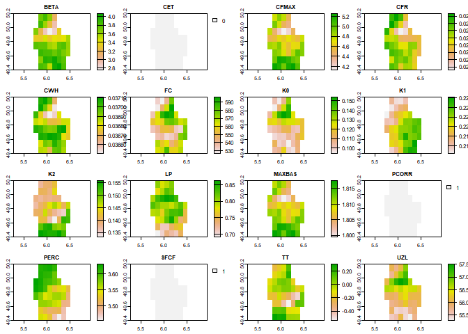

The goal of HBVr is to ease the accessebility of HBV Global Parameter maps created by Beck et al. (2020). Therefore this one-function package allows to download any of the cross-validation folds for your particular area of interest (AOI).
Installation
You can install the development version of HBVr from GitHub with:
# install.packages("devtools")
devtools::install_github("atsyplenkov/HBVr")Disclaimer
While HBVr does not redistribute the data or provide it in any way, we encourage users to cite original papers when using this package:
Beck HE, Pan M, Lin P, Seibert J, van Dijk AIJM, Wood EF. 2020. Global Fully Distributed Parameter Regionalization Based on Observed Streamflow From 4,229 Headwater Catchments. Journal of Geophysical Research: Atmospheres 125 : e2019JD031485. DOI: 10.1029/2019JD03148
Example
You can download mean zonal statistics
library(HBVr)
# Locate the shapefile
f <- system.file("ex/lux.shp", package="terra")
# Read it as SpatVector
v <- vect(f)
zonal_stat <-
hbv_get_parameters(
aoi = v,
folds = 1,
mean = TRUE
)
#> Downloading rasters...
#> Cropping rasters...
zonal_stat
#> $fold_0
#> mean
#> BETA 3.59133975
#> CET 0.00000000
#> CFMAX 4.76274042
#> CFR 0.02329523
#> CWH 0.03688424
#> FC 557.79513737
#> K0 0.11312447
#> K1 0.22010622
#> K2 0.14379373
#> LP 0.78630368
#> MAXBAS 1.80986611
#> PCORR 1.00000000
#> PERC 3.55778855
#> SFCF 1.00000000
#> TT -0.06733536
#> UZL 56.14696222or retrieve a SpatRaster objects:
rasters <-
hbv_get_parameters(
aoi = v,
folds = 1,
mean = FALSE
)
#> Downloading rasters...
#> Cropping rasters...
#> Projecting rasters...
plot(rasters[[1]])